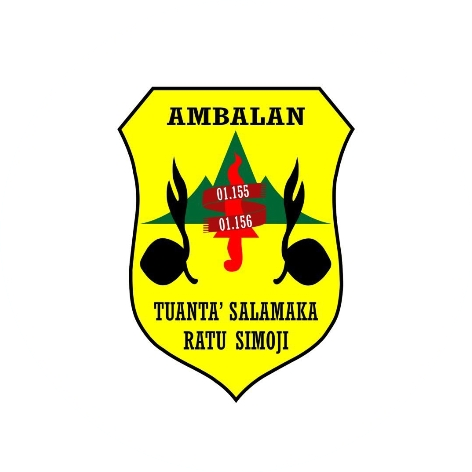
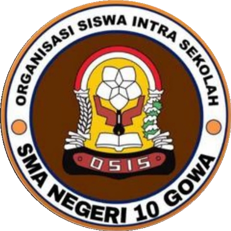
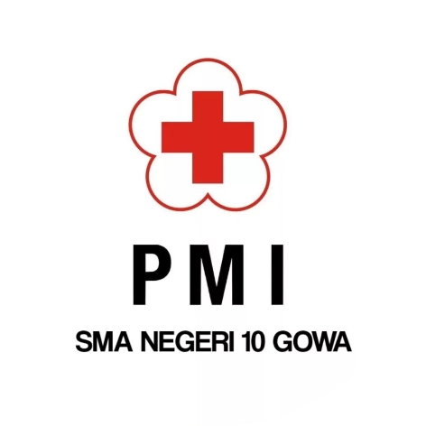
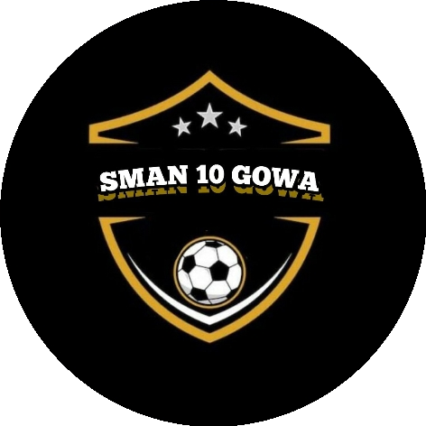
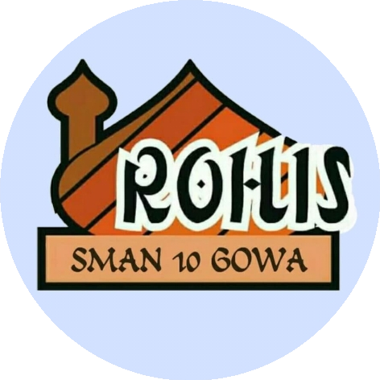
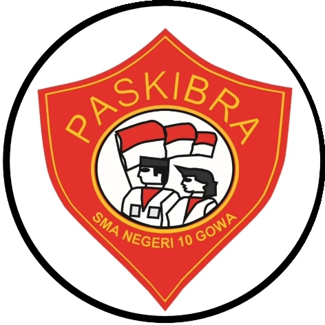

Provinsi Sulawesi Selatan · Kab. Gowa
SMA Negeri
10 Gowa
Romangpolong, Kecamatan Somba Opu — mendidik dengan semangat yang tak padam.
Kepala Sekolah
Ansar AS
Bentuk Pendidikan
SMA
Status
Negeri
Sinkronisasi Terakhir
31 Jan 2025
Profil Sekolah
Tumbuh di Romangpolong, berdiri untuk Sulawesi Selatan
SMA Negeri 10 Gowa berlokasi di Jl. Mustafa Dg. Bunga, BTN Saumata Indah, Kelurahan Romangpolong, Kecamatan Somba Opu, Kabupaten Gowa. Sekolah ini terdaftar sebagai sekolah negeri dengan akreditasi B berdasarkan SK BAN-SM No. 1857/BAN-SM/SK/2022.
Lambang sekolah menyatukan buku terbuka sebagai simbol ilmu, nyala api sebagai semangat belajar yang tak pernah padam, dan untaian padi sebagai lambang kesejahteraan — dinaungi nama provinsi Sulawesi Selatan.
Data Pokok
Data resmi Dapodik
Tenaga Pendidik
Guru & Staf
Ansar A.S, S.Pd.I
Risman Nur, S.Pd.I
Nurliah, S.Pd.I
Nur Ratna Dewi, S.Pd
Irawati Bundu Raga, S.Pd
Rezki Auliyah, S.Pd
Dra. Miming Salmah S
Herawati, S.Pd
Nuraeni, S.Pd
Sakhrir, S.Pd
Drs. H. Kamaruddin, M.Pd
Nurmayanti, S.Pd
Muhammad Husni, S.S
Darmawati D, S.Pd
Sri Andriani, S.Pd
Suharni L, S.Pd
Kurniati, S.Pd
Drafika Pongdatu, S.Pd
Jahril, S.Pd
Dra. Hj. Hasniah, M.M
Sri Wahyuni Nur, S.Pd
Rismawati, S.Pd
Nikhrawati Zaid, S.P., M.Pd
Abdul Walid Sofyan, S.Pd
Resova, S.T.P., M.Pd
Muallimah, S.Pd
Ririn Fachrianti, S.Pd.
Herlina M, S.Pd
Rostiah, S.Pd
Syatriani, S.Pd
Drs. Asnawi, M.Pd.I
Mustainah Munawar, S.S
Hasrawati, S.Pd
Sri Handayani, S.Pd
Agustina, S.Pd
R. Ika Setianingsih, S.Kom
Hasniati, S.Pd
Faizal, S.Sos., M.M
Syamsul, S.Pd
Eko Setiadi, S.Pd
Herman, S.OR
Malwadi, S.Pd., M.Pd
Wais Auliyah Wahab, S.Pd., M.Pd
Yanuar Ramadhana Kalimuddin, S.Pd
Firmansyah Hasanuddin, S.Pd
Nur Azizah Sarip, S.Pd.
A. Fitrah Amalia Rasyid, S.Pd.
Nurul Maghfirah, S.Pd.I
Mahyuddin, S.Pd
Amri Andi Wassa, S.Pd
Kegiatan Siswa
Organisasi & Ekstrakurikuler

Pramuka
Kepanduan, kemandirian, dan kerja sama tim.

OSIS
Organisasi Siswa Intra Sekolah, wadah kepemimpinan.

PMR
Palang Merah Remaja, pertolongan pertama & kepedulian sosial.
Basket
Cabang olahraga bola basket sekolah.

Futsal
Cabang olahraga futsal sekolah.

Rohis
Kerohanian Islam, pembinaan akhlak dan spiritual.

Paskibraka
Pasukan pengibar bendera, disiplin dan nasionalisme.
Kalender Akademik
Tahun Ajaran 2026/2027
Mengikuti pola kalender pendidikan nasional 2026/2027.
Memuat kalender...
Kabar Sekolah
Berita & Kegiatan
Memuat berita...